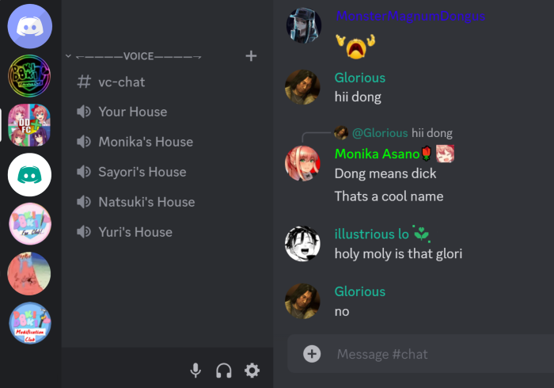
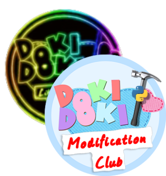
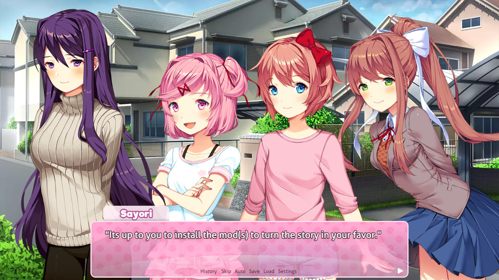

Bruh, What is this?
This is a Discord server based off of a once popularly known server in the DDLC community called "Doki Doki Fan Club". That server was shutdown summer 2022... I guess because they didn't want to mod the server anymore? But also because there were no upcoming updates to the game and being an active sever for 5 years you can imagine how burnt out the mods of that server were. (They still should've handed it over to another responsible individual rather than shutting it down). Anyways, the game is still very active in the mod community with the "Doki Doki Modding Club" Discord server almost always having people showcase their mods. Many people have made their own anime Discord severs and this one is no exception. That is why we have named this sever DDFC+ because it is for DDLC fans and anyone else who enjoys games/anime and isnt a f*****g liberal. It also resembles the name of the sequel... which is basically the same game "Doki Doki Literature Club +".
Other Servers
There are two other more popular DDLC Discord severs you may know about. One is r/ddlc which is the runner up to the original ddfc. The other is the Doki Doki Modding Club which as you would guess is all about modding the game. Engaging in these severs is encouraged because that is where the majoity of the community is on Discord but DDFC+ is a good alternative if you dont want to deal with mods llolololol. Doki Doki Literature Club
Of course before all this, you have actually played the game right? If not, continue at your own risk. The game is on Steam, all consoles and Here. The story is told from the perspective of a student who reluctantly joins the school's literature club on the insistence of his childhood best friend, and is given the option to romantically pursue three of its four female members. Doki Doki Literature Club features a non-traditional plot structure with multiple endings (not really) and unlockable cutscenes with each of the main characters. Although the game initially appears to be a lighthearted dating simulator, it is in fact a horror game that extensively breaks the fourth wall and quite frankly has a overall dissapointing end -_-. Background art by @gokneko